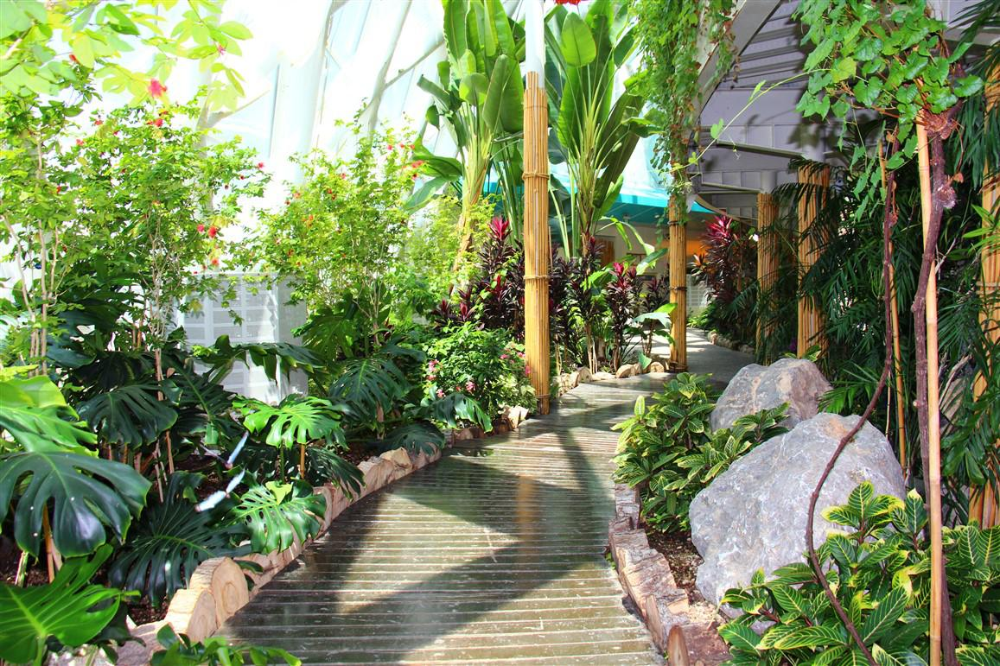

Biyolojik Çeşitlilik ve Gözlem
Tropik Uğur Böceği ve Kelebek Bahçesi, ziyaretçilere doğanın en renkli ve en zarif canlılarını yakından gözlemleme fırsatı sunan eşsiz bir mekândır. Bahçede yer alan yüzlerce uğur böceği ve kelebek türü, tropik iklim koşullarına benzer şekilde düzenlenmiş özel sergi alanlarında doğal yaşam ortamlarına uygun biçimde sergilenir. Ziyaretçiler bu canlıların kanat desenlerini, renk farklılıklarını ve davranış özelliklerini gözlemleyerek doğanın sunduğu çeşitliliği somut bir deneyimle keşfeder. Bahçenin atmosferi, tropik bitkiler ve özel ışıklandırmalarla desteklenerek canlıların doğal güzelliklerini daha da ön plana çıkarır. Bu bölüm, doğa meraklıları için görsel bir şölen olmanın ötesinde, biyolojik çeşitliliğin korunması ve ekolojik dengelerin anlaşılması açısından da büyük bir önem taşır.